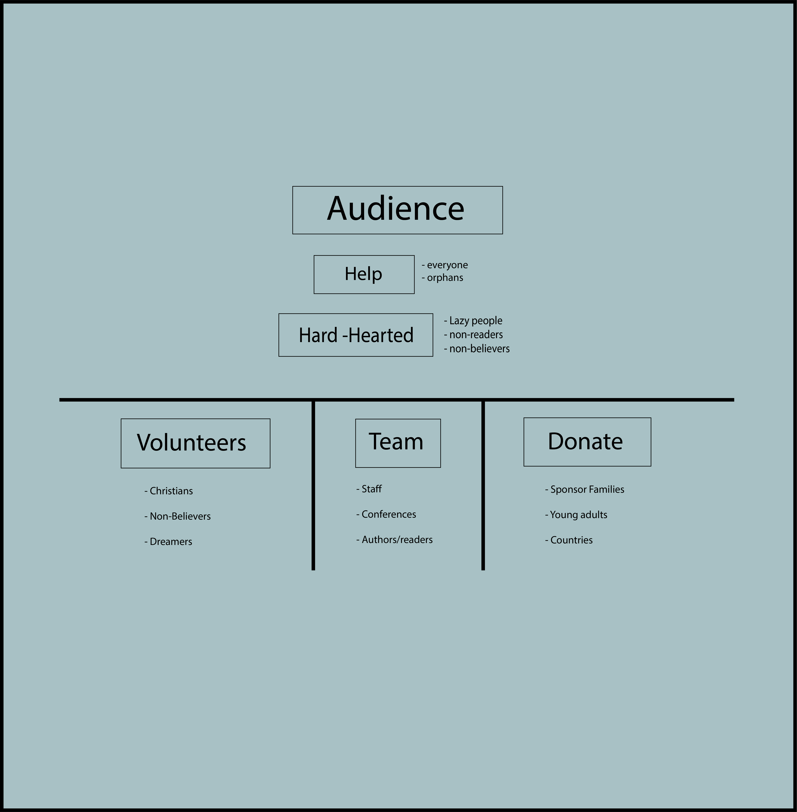
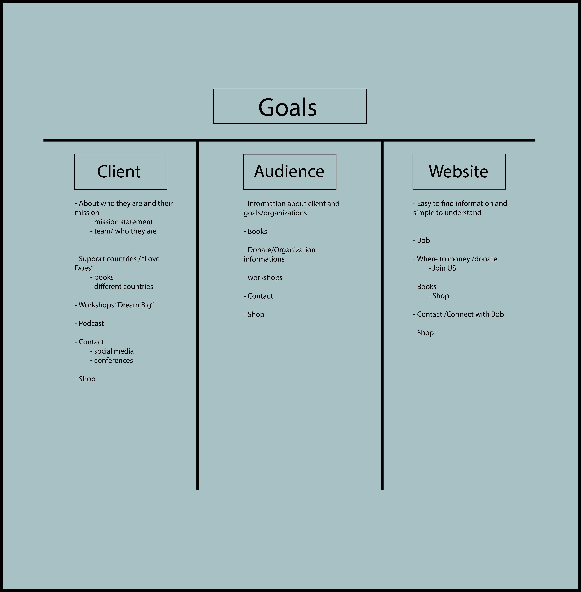
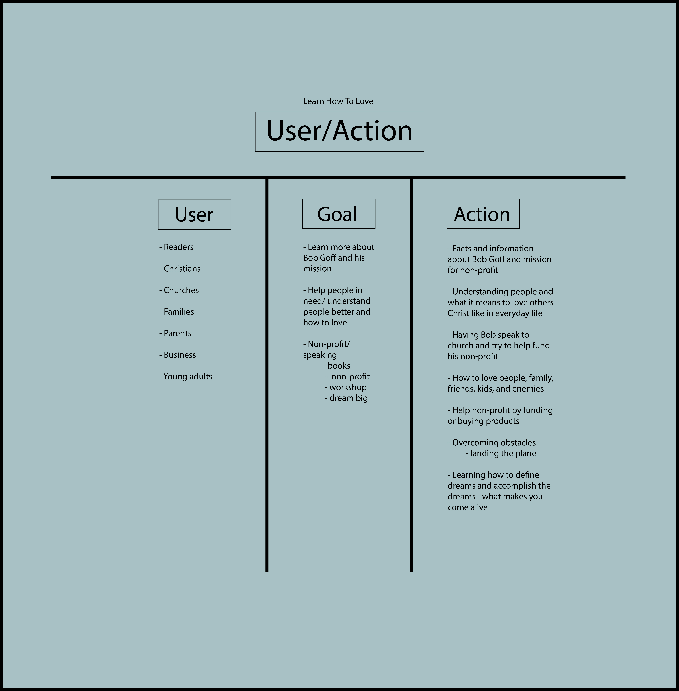

Audience and Goals
After researching different aspects about Bob Goff's mission for his website, I developed goals for each of the audiences I identified earlier.
Audience
To define and understand our audience better, we did an exercise where we brainstormed all the possible users for the website. We completed this brainstorming exercise with sticky notes. We organized them into user groups. This would help us organize people groups and help us understand the user's goals later on. To make sure that we meet each of the user's needs, we also developed overarching goals for the client and audience as well as goals that the website should meet.

This is the result for my audience brainstorming session.
I focused my audience towards three main groups. Volunteers, Team, and Donate. I had an outside group classified as the hard-hearted, because the three main groups goal is to focus on the hard-hearted. The audience's main goal is to help everyone and orphans. Bob Goff’s goal is to show people how to help each other. Within the first group, Volunteers, it holds Christians, Non-believers, and Dreamers. The second group, Team, holds staff, conferences, authors/readers. The Volunteer group will most likely overlap with the team group. The group is broken down into three sections, sponsor families, young adults, and countries. Most of the people in the category of Donate will also come from the over two groups.
Goals
I completed the next step of the brainstorming process and organized my goals with sticky notes.

Once I felt like this step was completed, I formulated my sticky notes into a document to easier to read when looking through it. There are three sections underneath the goals category, which are Client, Audience, and Website. The focus within the CLient section is what exactly the client would want to see or what they would search for. The Audience section addresses what those things Bob Goff already has that the client wants. The last section is the Website. Wihtin this section, I put things I thought the redesign would need to help the client use the website more.
Specific Goals
I completed the next step of the brainstorming process and organized my goals into specific goals with more sticky notes sticky notes.

Once I felt like this step was completed, I formulated my sticky notes into a document to easier to read when looking through it. I broke the goals into User/Action and then broke that section even further into three more sections, which are User, Goal, and Action. Within the User section I wrote down many different people who would be drawn to Bob Goff. For example, Readrs, Christians, Churches, Families, Parents, Business, and Young adults. Once I figured out the direct users, I created a goals column, which displays the different goals the users would have with Bob Goff himself as well as the website. Finally, the last section is Action, which connects with the Goal sectiom. The action section is about how the users take their goals into an action.
Goals Summary
My goal was established after lots of research as well as learning which users are drawn towards Bob Goff as well as his brand. When learning my main audience, it was much easier to understand what users want and what users need. This section of audience and goals led me to formulating the call to actions for the new design.